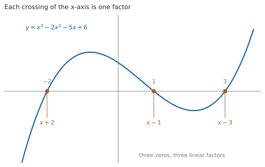
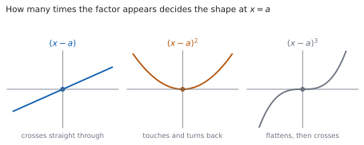

HL 2.12 — Polynomial functions, the factor and remainder theorems（多項式関数・因数定理・剰余定理・解の和と積）
- zeros、roots、factors の \(3\) つの言葉が、同じことの別の言い方だと分かる。
- 剰余定理を使って、割った余りを代入だけで出せる。
- 因数定理を使って、因数を \(1\) つ見つけ、多項式を完全に因数分解できる。
- 係数に文字があるとき、因数や余りの条件から文字を決められる。
- 解の和と積の公式（公式集の 2.12）を使える。
- 重解のところで、グラフが \(x\) 軸をまたぐのか接するのかを言える。
The idea
1. Polynomial functions（多項式関数）
シラバスは、次のように書いています。
Polynomial functions, their graphs and equations; zeros, roots and factors.
多項式とは、\(x\) の \(0\) 以上の整数乗を、定数倍して足しただけの式です。
\[ P(x) = a_{n}x^{n} + a_{n-1}x^{n-1} + \cdots + a_{1}x + a_{0}, \qquad a_{n} \neq 0 \tag{1}\]
\(n\) を degree（次数）、\(a_{n}\) を leading coefficient（最高次の係数） と呼びます。
\(\dfrac{1}{x}\) や \(\sqrt{x}\) が入っているものは、多項式ではありません。指数が \(0\) 以上の整数でないからです。
\(1\) 次（直線）と \(2\) 次（放物線）は SL で扱いました（SL 2.7）。HL では \(3\) 次以上も出ます。
2. Zeros, roots and factors: three names for one thing（同じことの \(3\) つの言い方）

図 1 は \(y = x^{3}-2x^{2}-5x+6\) のグラフです。\(x\) 軸と \(-2\)、\(1\)、\(3\) で交わっていて、
\[ x^{3}-2x^{2}-5x+6 = (x+2)(x-1)(x-3) \]
と因数分解できます。交点と因数が \(1\) 対 \(1\) で対応しています。
| 言葉 | 何について言うか | 例 |
|---|---|---|
| zero（零点） | 関数 \(P(x)\) について | \(P(3) = 0\) なので \(3\) は zero |
| root（解） | 方程式 \(P(x) = 0\) について | \(x = 3\) は方程式の root |
| factor（因数） | 式 \(P(x)\) について | \((x-3)\) は \(P(x)\) の factor |
\(3\) つは同じことを指しています。 問題文がどの言葉を使っていても、やることは変わりません。
\[ P(a) = 0 \iff x = a \ \text{は解} \iff (x-a) \ \text{は因数} \tag{2}\]
\(x^{2}+1\) には実数の zero がありません。グラフは \(x\) 軸と交わりません。
このときも、複素数まで広げれば解はあります（HL 1.14）。シラバスも、そのつながりを書いています。
Link to: complex roots of quadratic and polynomial equations (AHL 1.14).
\(n\) 次式の解は、複素数まで数えれば重解を込めてちょうど \(n\) 個です。
3. The remainder theorem（剰余定理）
\(P(x)\) を \((x-a)\) で割ったときの余りは、割り算をしなくても出せます。
\[ P(x) \ \text{を} \ (x-a) \ \text{で割った余りは} \ P(a) \tag{3}\]
たとえば \(P(x) = x^{3}-2x^{2}-5x+6\) を \((x-2)\) で割った余りは
\[ P(2) = 8 - 8 - 10 + 6 = -4 \]
です。\(1\) 行で出ます。 筆算をする必要はありません。
\((x+2) = \bigl(x-(-2)\bigr)\) なので、\(a = -2\) です。符号を逆にするところで落とす人が多い場所です。
\((2x-3)\) のように \(x\) の係数が \(1\) でないときは、\(2x-3 = 0\) を解いた \(x = \dfrac{3}{2}\) を入れます。
4. The factor theorem（因数定理）
シラバスは、\(2\) つをまとめて書いています。
The factor and remainder theorems.
因数定理は、剰余定理の余りが \(0\) の場合です。
\[ (x-a) \ \text{が} \ P(x) \ \text{の因数} \iff P(a) = 0 \tag{4}\]
「因数かどうか」を、代入 \(1\) 回で判定できます。
上の \(P(x) = x^{3}-2x^{2}-5x+6\) で \(P(1) = 1-2-5+6 = 0\) なので、\((x-1)\) は因数です。
\(P(x) = x^{3}-2x^{2}-5x+6\) の定数項は \(6\) です。整数の解があるなら、\(6\) の約数（\(\pm 1\)、\(\pm 2\)、\(\pm 3\)、\(\pm 6\)）のどれかです。
\((x-a)(\cdots)\) を展開したとき、定数項が \(-a \times (\text{残りの定数項})\) になるからです。
\(x = 1\) から試してください。 計算がいちばん軽く、当たることも多いです。
5. How to factorise a cubic（因数分解の進め方）
\(3\) 次式を因数分解する手順は、いつも同じです。
- 定数項の約数を、小さいものから代入して、\(P(a) = 0\) になる \(a\) を \(1\) つ見つける。
- \((x-a)\) で割って、\(2\) 次式を出す。
- \(2\) 次式を因数分解するか、解の公式で解く（SL 2.7）。
\(P(x) = x^{3}-2x^{2}-5x+6\) でやってみます。\(P(1) = 0\) でしたから、\((x-1)\) で割ります。
\[ x^{3}-2x^{2}-5x+6 = (x-1)\left(x^{2}-x-6\right) \]
割り算は筆算でもできますが、係数をくらべるほうが速いことが多いです。 \((x-1)(x^{2}+px+q)\) を展開すると
\[ x^{3} + (p-1)x^{2} + (q-p)x - q \]
なので、\(x^{2}\) の係数から \(p-1 = -2\)、定数項から \(-q = 6\) です。\(p = -1\)、\(q = -6\) と出ます。
\[ x^{2}-x-6 = (x-3)(x+2) \]
なので、\(P(x) = (x-1)(x-3)(x+2)\) です。
割ったあとの \(2\) 次式の判別式が負なら、実数の範囲ではそこで終わりです（SL 2.7）。
\(x^{3}+2x^{2}+3x+6 = (x+2)\left(x^{2}+3\right)\) が、その例です。\(x^{2}+3\) はこれ以上分けられません。
「もっと分けられるはず」と思って時間を使わないでください。 判別式を見れば \(1\) 行で決まります。
6. The sum and product of the roots（解の和と積）
シラバスは、次のように書いています。
Sum and product of the roots of polynomial equations.
これは公式集にあります。 公式集の 2.12 の欄に、次の形で印刷されています。
Sum and product of the roots of polynomial equations of the form \(\sum\limits_{r=0}^{n} a_{r}x^{r} = 0\)
Sum is \(\dfrac{-a_{n-1}}{a_{n}}\) ; product is \(\dfrac{(-1)^{n}a_{0}}{a_{n}}\)
\(3\) 次方程式 \(ax^{3}+bx^{2}+cx+d = 0\) なら、\(a_{3} = a\)、\(a_{2} = b\)、\(a_{0} = d\) なので
\[ \alpha+\beta+\gamma = -\frac{b}{a}, \qquad \alpha\beta\gamma = \frac{(-1)^{3}d}{a} = -\frac{d}{a} \tag{5}\]
です。解を求めずに、和と積だけが分かります。
\(x^{3}-2x^{2}-5x+6 = 0\) で確かめます。解は \(-2\)、\(1\)、\(3\) でした。
\[ (-2)+1+3 = 2 = -\frac{-2}{1}, \qquad (-2)(1)(3) = -6 = -\frac{6}{1} \]
どちらも合います。
\((-1)^{n}\) が付いているので、\(n\) が奇数なら符号が反転し、偶数ならそのままです。
\(2\) 次方程式 \(ax^{2}+bx+c = 0\) なら積は \(\dfrac{(-1)^{2}c}{a} = \dfrac{c}{a}\)、\(3\) 次なら \(-\dfrac{d}{a}\) です。
次数を確かめてから、符号を決めてください。
7. Repeated roots and the shape of the graph（重解とグラフの形）

同じ因数が \(2\) 回現れることがあります。\((x-2)^{2}(x+2)\) のような形です。このとき \(x = 2\) を double root（重解） と呼びます。
図 2 のとおり、回数でグラフの形が決まります。
| 因数 | \(x = a\) での形 | \(x\) 軸を |
|---|---|---|
| \((x-a)\) | まっすぐ通り抜ける | またぐ |
| \((x-a)^{2}\) | 触れて、戻る | またがない |
| \((x-a)^{3}\) | 平らになってから通る | またぐ |
奇数回ならまたぎ、偶数回なら接します。 グラフの概形をかくときに、いちばん効く見方です。
TI-Nspire CX II の Graphs ページに \(f(x)\) を入力し、menu → Analyze Graph → Zero を選びます。左の境界と右の境界をきかれるので、交点をはさむように \(2\) 点を指定すると、その交点の座標が出ます。
交点ごとに \(1\) 回ずつ操作します。 \(3\) 次式なら最大 \(3\) 回です。
接しているところは、読み落としやすいところです。 触れているだけの点も zero なので、グラフをよく見てください。
Paper 1 では使えません。 このページの例題と演習は、すべて手で解けるようにしてあります。
Why it works
なぜ、余りが \(P(a)\) になるのか
\(P(x)\) を \((x-a)\) で割ったときの商を \(Q(x)\)、余りを \(R(x)\) とすると
\[ P(x) = (x-a)Q(x) + R(x) \]
と書けます。余りの次数は、割る式の次数より小さいので、\((x-a)\) は \(1\) 次、\(R(x)\) は \(0\) 次、つまり定数です。\(R\) と書きます。
\[ P(x) = (x-a)Q(x) + R \]
ここに \(x = a\) を入れます。\((a-a) = 0\) なので、\(Q(a)\) が何であっても第 \(1\) 項は消えます。
\[ P(a) = 0 \times Q(a) + R = R \]
余り \(R\) が \(P(a)\) でした。 商 \(Q(x)\) を求めずに済むのは、\(x = a\) で第 \(1\) 項が消えるからです。
因数定理は、この \(R\) が \(0\) の場合です。 \(R = 0\) なら \(P(x) = (x-a)Q(x)\) で、\((x-a)\) は因数です。逆に因数なら \(R = 0\)、つまり \(P(a) = 0\) です。
なぜ、解の和と積があの形になるのか
\(3\) 次で見ます。\(ax^{3}+bx^{2}+cx+d = 0\) の解が \(\alpha\)、\(\beta\)、\(\gamma\) なら、左辺は
\[ a(x-\alpha)(x-\beta)(x-\gamma) \]
と書けます。解が分かれば因数が分かる（式 2）からです。展開します。
\[ a\Bigl[x^{3} - (\alpha+\beta+\gamma)x^{2} + (\alpha\beta+\beta\gamma+\gamma\alpha)x - \alpha\beta\gamma\Bigr] \]
もとの式と係数をくらべます。
\[ b = -a(\alpha+\beta+\gamma), \qquad d = -a\,\alpha\beta\gamma \]
\[ \alpha+\beta+\gamma = -\frac{b}{a}, \qquad \alpha\beta\gamma = -\frac{d}{a} \]
式 5 が出ました。
\(n\) 次でも同じです。 \(x^{n-1}\) の係数には解の和が、定数項には解の積が現れ、\((x-\alpha)\) の \(-\) が \(n\) 個かかるので \((-1)^{n}\) が付きます。公式集の形のとおりです。
なお、真ん中の \(\alpha\beta+\beta\gamma+\gamma\alpha = \dfrac{c}{a}\) も、同じ展開から読めます。ただし公式集には載っていません。 必要になったら、この展開をその場で書いてください。
なぜ、重解で接するのか
\(P(x) = (x-a)^{m}Q(x)\) で、\(Q(a) \neq 0\) とします。\(x\) が \(a\) にとても近いとき、\(Q(x)\) の符号は \(Q(a)\) の符号のままです。ですから、\(P(x)\) の符号は \((x-a)^{m}\) の符号で決まります。
- \(m\) が奇数なら、\((x-a)^{m}\) は \(x = a\) の前後で符号が変わります。\(P(x)\) も変わるので、グラフは \(x\) 軸をまたぎます。
- \(m\) が偶数なら、\((x-a)^{m}\) はどちらでも正です。符号が変わらないので、グラフは \(x\) 軸に触れて戻ります。
図 2 の \(3\) つが、この \(2\) 通りです。\(m = 3\) で平らに見えるのは、\((x-a)^{3}\) が \(0\) の近くでとても小さいからで、またぐことは \(m = 1\) と変わりません。
Worked examples
問題文は英語です。意味が理解できなかったら、問題文の下の「日本語訳」を開いてください。解説は日本語です。
例題も演習も、すべて電卓なしで解けます。 Paper 1 のつもりで解いてください。
例題 1 The polynomial \(P(x) = 2x^{3}+ax^{2}-5x+6\) has \((x-2)\) as a factor.
(a) Find the value of \(a\).
(b) Factorise \(P(x)\) completely.
日本語訳
多項式 \(P(x) = 2x^{3}+ax^{2}-5x+6\) は \((x-2)\) を因数にもちます。
(a) \(a\) の値を求めなさい。
(b) \(P(x)\) を完全に因数分解しなさい。
(a) 因数定理から \(P(2) = 0\) です（第 4 節）。
\[ P(2) = 2(8) + a(4) - 5(2) + 6 = 16 + 4a - 10 + 6 = 4a + 12 \]
\[ 4a + 12 = 0 \ \Rightarrow \ a = -3 \]
(b) \(P(x) = 2x^{3}-3x^{2}-5x+6\) を \((x-2)\) で割ります。\((x-2)\left(2x^{2}+px+q\right)\) を展開すると
\[ 2x^{3} + (p-4)x^{2} + (q-2p)x - 2q \]
です。\(x^{2}\) の係数から \(p - 4 = -3\) なので \(p = 1\)、定数項から \(-2q = 6\) なので \(q = -3\) です。
\[ P(x) = (x-2)\left(2x^{2}+x-3\right) = (x-2)(2x+3)(x-1) \]
検算。 \(x = 1\) を入れます。 \(2-3-5+6 = 0\) で、\((x-1)\) が因数であることと合います ✓
検算（解の和と積で）。 解は \(2\)、\(-\dfrac{3}{2}\)、\(1\) です。和は \(2 - \dfrac{3}{2} + 1 = \dfrac{3}{2}\) で、公式の \(-\dfrac{b}{a} = -\dfrac{-3}{2} = \dfrac{3}{2}\) と合います ✓ 積は \(2 \times \left(-\dfrac{3}{2}\right) \times 1 = -3\) で、\(-\dfrac{d}{a} = -\dfrac{6}{2} = -3\) と合います ✓ 展開とはまったく別の見方です。
(a) Since \((x-2)\) is a factor, \(P(2) = 0\).
\[16 + 4a - 10 + 6 = 0, \quad 4a = -12, \quad a = -3\]
(b) Writing \(P(x) = (x-2)\left(2x^{2}+px+q\right)\) and comparing coefficients:
\[x^{2}: \ p-4 = -3 \ \Rightarrow \ p = 1, \qquad x^{0}: \ -2q = 6 \ \Rightarrow \ q = -3\]
\[P(x) = (x-2)\left(2x^{2}+x-3\right) = (x-2)(2x+3)(x-1)\]
例題 2 The polynomial \(P(x) = x^{3}+ax^{2}+bx+6\) is divisible by \((x-1)\), and leaves a remainder of \(12\) when divided by \((x+2)\).
(a) Find the value of \(a\) and the value of \(b\).
(b) Hence solve \(P(x) = 0\).
日本語訳
多項式 \(P(x) = x^{3}+ax^{2}+bx+6\) は \((x-1)\) で割り切れ、\((x+2)\) で割ると余りが \(12\) になります。
(a) \(a\) と \(b\) の値を求めなさい。
(b) それを使って \(P(x) = 0\) を解きなさい。
(a) 条件が \(2\) つあるので、式が \(2\) つ立ちます。
「割り切れる」は余りが \(0\)、つまり \(P(1) = 0\) です。
\[ 1 + a + b + 6 = 0 \ \Rightarrow \ a + b = -7 \]
「\((x+2)\) で割ると余りが \(12\)」は \(P(-2) = 12\) です（第 3 節）。\(x = -2\) を入れるところに気をつけます。
\[ -8 + 4a - 2b + 6 = 12 \ \Rightarrow \ 4a - 2b = 14 \ \Rightarrow \ 2a - b = 7 \]
\(2\) つを足すと \(3a = 0\) なので \(a = 0\)、\(b = -7\) です。
(b) \(P(x) = x^{3}-7x+6\) です。\(P(1) = 0\) なので \((x-1)\) で割ります。
\[ x^{3}-7x+6 = (x-1)\left(x^{2}+x-6\right) = (x-1)(x+3)(x-2) \]
解は \(x = 1\)、\(x = -3\)、\(x = 2\) です。
検算。 \(P(-2) = -8 + 14 + 6 = 12\) ✓ 余りの条件に戻りました。
検算（解の和と積で）。 和は \(1-3+2 = 0\) で、\(-\dfrac{a}{1} = 0\) と合います ✓ 積は \(1 \times (-3) \times 2 = -6\) で、\(-\dfrac{6}{1} = -6\) と合います ✓
(a) \(P(1) = 0\): \(\ 1+a+b+6 = 0\), so \(a+b = -7\).
\(P(-2) = 12\): \(\ -8+4a-2b+6 = 12\), so \(2a-b = 7\).
Adding: \(3a = 0\), so \(a = 0\) and \(b = -7\).
(b) \(P(x) = x^{3}-7x+6 = (x-1)\left(x^{2}+x-6\right) = (x-1)(x+3)(x-2)\)
The roots are \(x = 1\), \(x = -3\) and \(x = 2\).
例題 3 The equation \(2x^{3}-5x^{2}+x+3 = 0\) has roots \(\alpha\), \(\beta\) and \(\gamma\).
(a) Write down the value of \(\alpha+\beta+\gamma\) and the value of \(\alpha\beta\gamma\).
(b) Find a cubic equation with integer coefficients whose roots are \(2\alpha\), \(2\beta\) and \(2\gamma\).
日本語訳
方程式 \(2x^{3}-5x^{2}+x+3 = 0\) の解を \(\alpha\)、\(\beta\)、\(\gamma\) とします。
(a) \(\alpha+\beta+\gamma\) と \(\alpha\beta\gamma\) の値を書きなさい。
(b) \(2\alpha\)、\(2\beta\)、\(2\gamma\) を解とする、係数が整数の \(3\) 次方程式を \(1\) つ求めなさい。
(a) 公式集の 2.12 をそのまま使います（第 6 節）。\(a = 2\)、\(b = -5\)、\(d = 3\) です。
\[ \alpha+\beta+\gamma = -\frac{-5}{2} = \frac{5}{2}, \qquad \alpha\beta\gamma = -\frac{3}{2} \]
\(3\) 次なので、積には \(-\) が付きます。
(b) 新しい解を \(X = 2x\) とすると \(x = \dfrac{X}{2}\) です。もとの方程式に入れます。
\[ 2\left(\frac{X}{2}\right)^{3} - 5\left(\frac{X}{2}\right)^{2} + \frac{X}{2} + 3 = 0 \]
\[ \frac{X^{3}}{4} - \frac{5X^{2}}{4} + \frac{X}{2} + 3 = 0 \]
両辺を \(4\) 倍します。
\[ X^{3} - 5X^{2} + 2X + 12 = 0 \]
検算。 和と積で確かめます。 新しい解の和は \(2\alpha+2\beta+2\gamma = 2 \times \dfrac{5}{2} = 5\) のはずです。出した式では \(-\dfrac{-5}{1} = 5\) ✓
検算（積のほう）。 新しい解の積は \(8\alpha\beta\gamma = 8 \times \left(-\dfrac{3}{2}\right) = -12\) のはずです。出した式では \(-\dfrac{12}{1} = -12\) ✓ もとの解を求めずに確かめられました。
(a) \(\alpha+\beta+\gamma = \dfrac{5}{2}\), \(\ \alpha\beta\gamma = -\dfrac{3}{2}\)
(b) Let \(X = 2x\), so \(x = \dfrac{X}{2}\). Substituting into the equation:
\[2\left(\frac{X}{2}\right)^{3} - 5\left(\frac{X}{2}\right)^{2} + \frac{X}{2} + 3 = 0\]
Multiplying by \(4\):
\[X^{3} - 5X^{2} + 2X + 12 = 0\]
例題 4 The graph of \(y = x^{3}+ax^{2}+bx+c\) has a double zero at \(x = 2\) and passes through the point \((0,\ 8)\).
(a) Find the values of \(a\), \(b\) and \(c\).
(b) State, with a reason, whether the graph crosses the \(x\)-axis at \(x = 2\).
日本語訳
\(y = x^{3}+ax^{2}+bx+c\) のグラフは \(x = 2\) で重解をもち、点 \((0,\ 8)\) を通ります。
(a) \(a\)、\(b\)、\(c\) の値を求めなさい。
(b) このグラフが \(x = 2\) で \(x\) 軸をまたぐかどうかを、理由をつけて述べなさい。
(a) \(x = 2\) が重解なので、\((x-2)^{2}\) が因数です。\(3\) 次で最高次の係数が \(1\) なので、残りは \(1\) 次の因数 \(1\) つです。
\[ y = (x-2)^{2}(x-p) \]
\((0,\ 8)\) を通るので、\(x = 0\) を入れて
\[ (-2)^{2}(-p) = 8 \ \Rightarrow \ -4p = 8 \ \Rightarrow \ p = -2 \]
\[ y = (x-2)^{2}(x+2) = \left(x^{2}-4x+4\right)(x+2) = x^{3}-2x^{2}-4x+8 \]
\(a = -2\)、\(b = -4\)、\(c = 8\) です。
(b) \((x-2)\) が \(2\) 回現れているので、またぎません（第 7 節）。
試験ではこう書く
Near \(x = 2\) we can write \(y = (x-2)^{2}(x+2)\), where the factor \((x+2)\) takes the value \(4\) at \(x = 2\) and so is positive on both sides of \(x = 2\). The factor \((x-2)^{2}\) is a square, so it is positive on both sides of \(x = 2\) as well, and zero only at \(x = 2\) itself. Hence \(y\) has the same sign on both sides of \(x = 2\), so the graph touches the \(x\)-axis there and turns back: it does not cross.
（\(x = 2\) の近くでは \((x+2)\) の符号は変わらず、\((x-2)^{2}\) は \(2\) 乗なので常に \(0\) 以上である。ですから \(y\) の符号が変わらず、接して戻る、という意味です。）
検算。 \(x = 2\) の両側で符号を見ます。 \(x = 1\) では \((1-2)^{2}(1+2) = 3 > 0\)、\(x = 3\) では \((3-2)^{2}(3+2) = 5 > 0\) ✓ どちらも正で、符号が変わっていません。
検算（展開のほう）。 \(x = 0\) を \(x^{3}-2x^{2}-4x+8\) に入れると \(8\) ✓ \((0,\ 8)\) を通っています。
(a) A double zero at \(x = 2\) gives a factor \((x-2)^{2}\), so \(y = (x-2)^{2}(x-p)\).
At \(x = 0\): \(\ 4(-p) = 8\), so \(p = -2\).
\[y = (x-2)^{2}(x+2) = x^{3}-2x^{2}-4x+8\]
Hence \(a = -2\), \(b = -4\), \(c = 8\).
(b) The factor \((x-2)\) occurs twice, so \(y\) does not change sign at \(x = 2\): the graph touches the \(x\)-axis and turns back, and does not cross.
Common errors
\((x+2) = \bigl(x-(-2)\bigr)\) なので、入れるのは \(x = -2\) です（第 3 節）。
\((x-a)\) の形に直してから \(a\) を読む、と決めておくと落としません。
\((x-2)\left(2x^{2}+x-3\right)\) は、まだ途中です。\(2\) 次式が因数分解できるなら、そこまで進めてください。
判別式を見て、負のときだけ「これ以上分けられない」と書きます（第 5 節）。
\(3\) 次では、積は \(\dfrac{d}{a}\) ではなく \(-\dfrac{d}{a}\) です（第 6 節）。
公式集の式には \((-1)^{n}\) が書かれています。次数を確かめてから、符号を決めてください。
\(2x^{3}-5x^{2}+\cdots\) の解の和は \(5\) ではありません。\(-\dfrac{b}{a} = \dfrac{5}{2}\) です。
\(a = 1\) の問題ばかり練習していると、ここで落とします。公式の分母は、いつも \(a_{n}\) です。
\((x-2)^{2}(x+2)\) の解は \(2\)、\(2\)、\(-2\) の \(3\) つです。和と積を出すときは、重解も回数ぶん数えます。
和は \(2+2-2 = 2\) で、\(2 + (-2) = 0\) ではありません。
divisible by $(x-1)$ は、余りが \(0\)、つまり \(P(1) = 0\) です。
leaves a remainder of $12$ なら \(P(a) = 12\) です。この \(2\) つを取りちがえると、立てる式がまるごとずれます。
Exercises
各問題に、折りたたみが \(3\) つ付いています。日本語訳、解答例（答案用紙に書くべきこと。英語です）、解説（なぜそうなるか。日本語です）。
まず自分で解いて、次に解答例と見くらべてください。解説は、合わなかったときだけ開けば十分です。
1 Show that \((x+1)\) is a factor of \(P(x) = x^{3}-4x^{2}+x+6\), and hence factorise \(P(x)\) completely.
日本語訳
\((x+1)\) が \(P(x) = x^{3}-4x^{2}+x+6\) の因数であることを示し、それを使って \(P(x)\) を完全に因数分解しなさい。
\[P(-1) = -1 - 4 - 1 + 6 = 0\]
so \((x+1)\) is a factor.
Writing \(P(x) = (x+1)\left(x^{2}+px+q\right)\) and comparing coefficients:
\[x^{2}: \ p+1 = -4 \ \Rightarrow \ p = -5, \qquad x^{0}: \ q = 6\]
\[P(x) = (x+1)\left(x^{2}-5x+6\right) = (x+1)(x-2)(x-3)\]
\((x+1)\) なので、入れるのは \(x = -1\) です（第 3 節）。
\(x^{2}-5x+6\) は、足して \(-5\)・掛けて \(6\) の \(2\) 数、つまり \(-2\) と \(-3\) で分けられます。
検算。 解の和は \(-1+2+3 = 4\) で、\(-\dfrac{-4}{1} = 4\) ✓
検算（積で）。 \((-1)(2)(3) = -6\) で、\(-\dfrac{6}{1} = -6\) ✓ \(3\) 次なので \(-\) が付きます。
2 Find the remainder when \(x^{4}-3x^{2}+2x-5\) is divided by \((x-2)\).
日本語訳
\(x^{4}-3x^{2}+2x-5\) を \((x-2)\) で割った余りを求めなさい。
By the remainder theorem, the remainder is \(P(2)\).
\[P(2) = 16 - 12 + 4 - 5 = 3\]
The remainder is \(3\).
割り算をする必要はありません（第 3 節）。\(x^{3}\) の項がないので、\(x^{3}\) の係数は \(0\) として扱います。
検算。 \(2^{4} = 16\)、\(3 \times 2^{2} = 12\)、\(2 \times 2 = 4\) です。\(16-12+4-5 = 3\) ✓
検算（\(P(x) = (x-2)Q(x)+3\) の形で）。 余りが \(3\) なら \(P(x)-3\) が \((x-2)\) で割り切れるはずです。\(P(2)-3 = 0\) ✓
3 The polynomial \(P(x) = 2x^{3}+x^{2}+ax+b\) has \((x-1)\) as a factor, and leaves a remainder of \(-18\) when divided by \((x+2)\).
(a) Find the value of \(a\) and the value of \(b\).
(b) Show that \(P(x) = 0\) has exactly one real root.
日本語訳
多項式 \(P(x) = 2x^{3}+x^{2}+ax+b\) は \((x-1)\) を因数にもち、\((x+2)\) で割ると余りが \(-18\) になります。
(a) \(a\) と \(b\) の値を求めなさい。
(b) \(P(x) = 0\) の実数解がちょうど \(1\) つであることを示しなさい。
(a) \(P(1) = 0\): \(\ 2+1+a+b = 0\), so \(a+b = -3\).
\(P(-2) = -18\): \(\ -16+4-2a+b = -18\), so \(-2a+b = -6\).
Subtracting: \(3a = 3\), so \(a = 1\) and \(b = -4\).
(b) \(P(x) = 2x^{3}+x^{2}+x-4 = (x-1)\left(2x^{2}+3x+4\right)\)
For the quadratic factor, \(\Delta = 3^{2}-4(2)(4) = 9-32 = -23 < 0\), so it has no real zeros.
Hence the only real root is \(x = 1\).
4 The equation \(3x^{3}+2x^{2}-7x+4 = 0\) has roots \(\alpha\), \(\beta\) and \(\gamma\). Write down the value of \(\alpha+\beta+\gamma\) and the value of \(\alpha\beta\gamma\).
日本語訳
方程式 \(3x^{3}+2x^{2}-7x+4 = 0\) の解を \(\alpha\)、\(\beta\)、\(\gamma\) とします。\(\alpha+\beta+\gamma\) と \(\alpha\beta\gamma\) の値を書きなさい。
\[\alpha+\beta+\gamma = -\frac{2}{3}, \qquad \alpha\beta\gamma = -\frac{4}{3}\]
公式集の 2.12 をそのまま使います（第 6 節）。\(a = 3\)、\(b = 2\)、\(d = 4\) です。
\(3\) 次なので \((-1)^{3} = -1\) が積に付きます。
検算。 和のほうは \(-\dfrac{b}{a} = -\dfrac{2}{3}\) ✓ 分母が \(3\) になっているかを見てください。
検算（次数のほう）。 \(n = 3\) は奇数なので、積の符号は反転します ✓ \(\dfrac{4}{3}\) ではありません。
5 The equation \(x^{3}+px^{2}+qx+8 = 0\) has three roots whose sum is \(5\).
(a) Find the value of \(p\).
(b) Explain why the product of the roots can be found without knowing \(p\) or \(q\), and state its value.
日本語訳
方程式 \(x^{3}+px^{2}+qx+8 = 0\) は、\(3\) つの解の和が \(5\) です。
(a) \(p\) の値を求めなさい。
(b) 解の積が \(p\) や \(q\) を知らなくても求められる理由を説明し、その値を書きなさい。
(a) The sum of the roots is \(-\dfrac{p}{1} = -p\), so \(-p = 5\) and \(p = -5\).
(b) The product of the roots is \(\dfrac{(-1)^{3}a_{0}}{a_{3}} = -\dfrac{8}{1} = -8\), which depends only on the constant term and the leading coefficient. Neither \(p\) nor \(q\) appears in that expression, so the product is \(-8\) whatever \(p\) and \(q\) are.
公式に \(q\) が出てこないことに気づけるかどうかの問題です（第 6 節）。和は \(a_{n-1}\) と \(a_{n}\) だけ、積は \(a_{0}\) と \(a_{n}\) だけで決まります。
\(q\) は、この \(2\) つのどちらにも効きません。
検算。 \(p = -5\) を入れた \(x^{3}-5x^{2}+qx+8\) の解の和は \(-\dfrac{-5}{1} = 5\) ✓
検算（\(q\) を変えてみる）。 \(q = 2\) でも \(q = 100\) でも、定数項は \(8\) のままです。積はどちらも \(-8\) です ✓
6 The equation \(x^{3}-3x^{2}+4x-2 = 0\) has roots \(\alpha\), \(\beta\) and \(\gamma\). Find a cubic equation with integer coefficients whose roots are \(2\alpha\), \(2\beta\) and \(2\gamma\).
日本語訳
方程式 \(x^{3}-3x^{2}+4x-2 = 0\) の解を \(\alpha\)、\(\beta\)、\(\gamma\) とします。\(2\alpha\)、\(2\beta\)、\(2\gamma\) を解とする、係数が整数の \(3\) 次方程式を \(1\) つ求めなさい。
Let \(X = 2x\), so \(x = \dfrac{X}{2}\). Substituting:
\[\left(\frac{X}{2}\right)^{3} - 3\left(\frac{X}{2}\right)^{2} + 4\left(\frac{X}{2}\right) - 2 = 0\]
\[\frac{X^{3}}{8} - \frac{3X^{2}}{4} + 2X - 2 = 0\]
Multiplying by \(8\):
\[X^{3} - 6X^{2} + 16X - 16 = 0\]
\(X = 2x\) と置いて、もとの式に \(x = \dfrac{X}{2}\) を入れるのが定石です（例題 3）。最後に分母をはらって、係数を整数にします。
検算。 もとの解の和は \(-\dfrac{-3}{1} = 3\) なので、新しい解の和は \(6\) のはずです。出した式では \(-\dfrac{-6}{1} = 6\) ✓
検算（積で）。 もとの積は \(-\dfrac{-2}{1} = 2\) なので、新しい積は \(8 \times 2 = 16\) のはずです。出した式では \(-\dfrac{-16}{1} = 16\) ✓
7 The graph of \(y = x^{3}+ax^{2}+bx+18\) has a double zero at \(x = 3\). Find the value of \(a\) and the value of \(b\).
日本語訳
\(y = x^{3}+ax^{2}+bx+18\) のグラフは \(x = 3\) で重解をもちます。\(a\) と \(b\) の値を求めなさい。
A double zero at \(x = 3\) gives \(y = (x-3)^{2}(x-p)\).
Comparing constant terms: \(9(-p) = 18\), so \(p = -2\).
\[y = (x-3)^{2}(x+2) = \left(x^{2}-6x+9\right)(x+2) = x^{3}-4x^{2}-3x+18\]
Hence \(a = -4\) and \(b = -3\).
重解は \((x-3)^{2}\) という因数です（第 7 節）。\(3\) 次で最高次の係数が \(1\) なので、残りは \((x-p)\) の形の \(1\) 次式が \(1\) つです。
定数項をくらべるのが、いちばん速い道です。
検算。 \(x = 3\) を入れると \(27-36-9+18 = 0\) ✓
検算（解の和で）。 解は \(3\)、\(3\)、\(-2\) なので和は \(4\) です。\(-\dfrac{a}{1} = -(-4) = 4\) ✓ 重解を \(2\) 回数えるところが要です。
8 Let \(f(x) = (x+2)(x-1)^{2}(x-3)\). State the degree of \(f\), describe what the graph of \(y = f(x)\) does at each of \(x = -2\), \(x = 1\) and \(x = 3\), and state how many times the graph crosses the \(x\)-axis.
日本語訳
\(f(x) = (x+2)(x-1)^{2}(x-3)\) とします。\(f\) の次数を書き、\(y = f(x)\) のグラフが \(x = -2\)、\(x = 1\)、\(x = 3\) のそれぞれで何をするかを述べ、グラフが \(x\) 軸をまたぐ回数を書きなさい。
The degree is \(1+2+1 = 4\).
At \(x = -2\) the factor occurs once, so the graph crosses the \(x\)-axis.
At \(x = 1\) the factor occurs twice, so the graph touches the \(x\)-axis and turns back.
At \(x = 3\) the factor occurs once, so the graph crosses the \(x\)-axis.
The graph crosses the \(x\)-axis twice.
次数は、因数の指数を全部足したものです。展開しなくても分かります。
検算。 \(x = 1\) の両側で符号を見ます。\(f(0) = (2)(1)(-3) = -6 < 0\)、\(f(2) = (4)(1)(-1) = -4 < 0\) ✓ 符号が変わっていないので、接しています。
検算（またぐほう）。 \(f(-3) = (-1)(16)(-6) = 96 > 0\) と \(f(0) = -6 < 0\) で、\(x = -2\) をはさんで符号が変わります ✓
試験ではこう書く
The degree of \(f\) is \(1+2+1 = 4\). At \(x = -2\) the factor \((x+2)\) appears to the first power, an odd power, so \(f\) changes sign there and the graph crosses the \(x\)-axis. At \(x = 1\) the factor \((x-1)\) appears squared; a square is never negative, so \(f\) keeps the same sign on both sides of \(x = 1\) and the graph touches the \(x\)-axis and turns back without crossing. At \(x = 3\) the factor \((x-3)\) again appears to the first power, so the graph crosses there as well. The graph therefore crosses the \(x\)-axis exactly twice, at \(x = -2\) and at \(x = 3\).
9 Show that \((x-1)\) is a factor of \(x^{n}-1\) for every positive integer \(n\), and explain how you know.
日本語訳
すべての正の整数 \(n\) について \((x-1)\) が \(x^{n}-1\) の因数であることを示し、なぜそう言えるのかを説明しなさい。
Let \(P(x) = x^{n}-1\). Then
\[P(1) = 1^{n} - 1 = 1 - 1 = 0\]
since \(1^{n} = 1\) for every positive integer \(n\).
By the factor theorem, \(P(1) = 0\) means \((x-1)\) is a factor of \(P(x)\).
割り算をする必要はありません（第 4 節）。代入 \(1\) 回で終わります。
\(1\) は何乗しても \(1\) です。ここだけが、\(n\) に依らない理由です。
検算。 \(n = 3\) で確かめます。\(x^{3}-1 = (x-1)\left(x^{2}+x+1\right)\) ✓
検算（\(n = 4\) で）。 \(x^{4}-1 = (x-1)\left(x^{3}+x^{2}+x+1\right)\) ✓ どちらも \((x-1)\) が出ています。
試験ではこう書く
Let \(P(x) = x^{n}-1\), where \(n\) is a positive integer. Substituting \(x = 1\) gives \(P(1) = 1^{n}-1\), and \(1^{n} = 1\) for every positive integer \(n\), so \(P(1) = 1-1 = 0\). The factor theorem states that \((x-a)\) is a factor of a polynomial \(P(x)\) exactly when \(P(a) = 0\). Taking \(a = 1\), we conclude that \((x-1)\) is a factor of \(x^{n}-1\). The argument does not depend on the value of \(n\), so it holds for every positive integer \(n\).
10 A student writes: “The remainder when \(P(x) = x^{3}+2x^{2}+3x+6\) is divided by \((x+2)\) is \(P(2) = 8+8+6+6 = 28\).” Explain the error, and find the correct remainder.
日本語訳
ある生徒が、次のように書きました。「\(P(x) = x^{3}+2x^{2}+3x+6\) を \((x+2)\) で割った余りは \(P(2) = 8+8+6+6 = 28\) である。」まちがいを説明し、正しい余りを求めなさい。
The remainder theorem uses the value of \(x\) that makes the divisor zero. Here \(x+2 = 0\) gives \(x = -2\), not \(x = 2\).
\[P(-2) = -8 + 8 - 6 + 6 = 0\]
The remainder is \(0\), so \((x+2)\) is in fact a factor of \(P(x)\).
\((x-a)\) の形に直してから \(a\) を読む、と決めておくと防げます（第 3 節）。\((x+2)\) は \(\bigl(x-(-2)\bigr)\) です。
符号を逆にしただけで、答えが \(28\) から \(0\) に変わりました。余りが \(0\) かどうかは、因数かどうかと同じですから、意味も大きく変わります。
検算。 実際に因数分解できます。\(x^{3}+2x^{2}+3x+6 = (x+2)\left(x^{2}+3\right)\) ✓
検算（\(x^{2}+3\) のほう）。 判別式は \(0-12 = -12 < 0\) なので、実数の範囲ではこれ以上分けられません ✓
試験ではこう書く
The remainder theorem says that the remainder on division by \((x-a)\) is \(P(a)\), where \(a\) is the value that makes the divisor zero. The divisor here is \(x+2\), and \(x+2 = 0\) gives \(x = -2\), so the value required is \(P(-2)\) and not \(P(2)\). Evaluating, \(P(-2) = (-2)^{3}+2(-2)^{2}+3(-2)+6 = -8+8-6+6 = 0\). The correct remainder is \(0\), and since the remainder is zero the factor theorem tells us that \((x+2)\) is a factor of \(P(x)\).